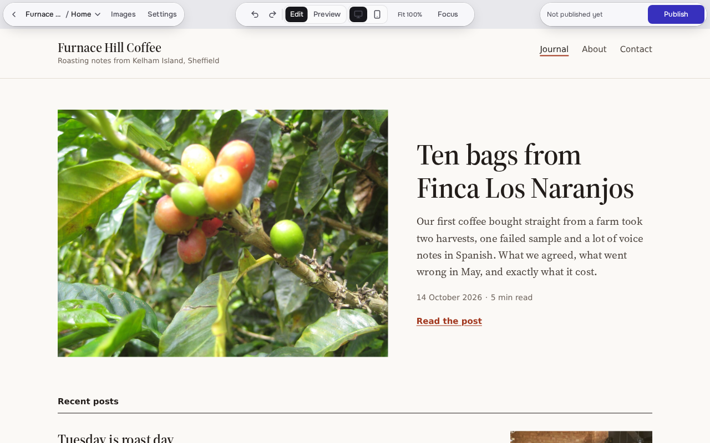

Rótulo steps back like a white gallery wall, and the owner's site is the only colour on the page. Chrome becomes small opaque ink capsules that read the same over any site. The signature is a before and after the visitor drags, built from two real screenshots of one heading edit.
Type
Onest only, display at 500, lighter and larger. In the repo, OFL 1.1.
Colour
wall ink, also the CTA ultramarine only for selection and focus
Icons
Lucide sprite in the repo, ISC.
Needs approval
Two identity changes: glass level 2 replaced by opaque ink capsules in the editor, and ink, not ultramarine, as the primary button. No new font or icon.
1. Homepage hero

Heading · SavedEdit textStyleLinkFurnace Hill / HomeEditPreviewNot live yetPublish
Furnace Hill Coffee, imported from a ZIP. The site's own type and photos, untouched.
Built with AI. Edited by you.
Import the website your AI tool exported, change its words, photos and links right on the page, and publish to your own address.
Import the ZIPStatic sites only. Rótulo lists anything it left out.
Click and typeSaved as a draft. Undo is always there.
PublishReview the changes, then go live. Older versions stay in history.
BeforeAfter
3. Editor chrome: opaque ink capsules
Furnace Hill / HomeImagesNot live yetPublish · 2Image · SavedReplace imageDescriptionLink
Ink capsules keep 15:1 text contrast over any site without a blur measurement, and they look the same over white, black and photos. The cost is weight: over a light site they draw more attention than glass, and they drop the floating material the brief asks for. The shipped light panel on the right of the screenshot is unchanged in this sketch.

 BeforeAfter
BeforeAfter